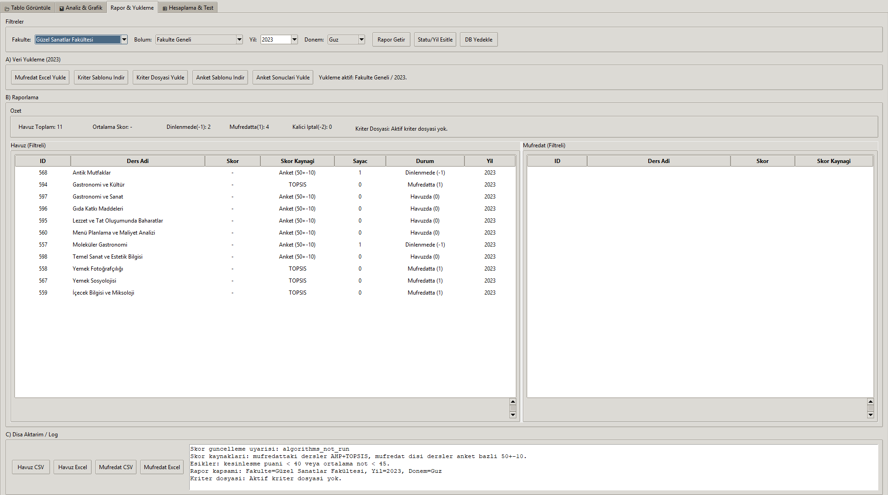
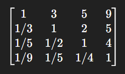

Oruç Altundağ
Problemin Anatomisi
"Yönetilemeyen ve ölçülemeyen süreçler, adil kararlar üretemez."
GIGO (Garbage In, Garbage Out) Prensibine Karşı Önlem

Algoritma Çalışmadan Önce: "Veri Hazır mı?"
Hazırlık Kontrolü — Karar Merkezi çıktısı
Algoritma çalıştırılabilir mi: Evet
Tamlık oranı: %100.0 | Seviye: completed
Eksik zorunlu alan: 0 Geçersiz: 0
Risk: low (0.0)
Aktif override: Hayır
Kriter bazlı özet:
- average_grade: %100
- survey_count (opsiyonel): %100
Veri kaynağı: criteria_completion_matrix · criteria_validation_issues · criteria_missing_data_risks
Talep → Onay → Denetim İzi (Roller Ayrılığı)
Talep (pending) → Yetkili Onayı → approved → kapı açılır | ya da → rejected
Bekleyen Override Talepleri — Yetkili Onayı
Onaylandığında: approved → can_run = Evet, sonuç raporuna override dipnotu işlenir.
Çok Kriterli Karar Verme (MCDA)
Akademik değer tek boyutlu (sadece not ortalaması) değildir. Güvenlik, yakıt ve hızın bir arabayı tanımlaması gibi, başarı, anket ve trend de dersi tanımlar.
ÇÖZÜM: AHP + TOPSIS + AI Hibrit Motoru
Stratejiyi Matematiğe Çeviren Terzi

İnsan Yargısının Matematiksel Denetimi
Sistemin Güvenlik Kilidi
Zamansal Dinamikler ve Eksik Veri Yönetimi
İdeal Çözüme Uzaklık
Açıklanabilir Yapay Zeka (XAI - Explainable AI)
Neden Derin Öğrenme (Deep Learning) Kullanmadık?
Çünkü akademik bir kararın "nedenini" açıklayabilmeliyiz. "Yapay zeka öyle istedi" bir savunma değildir.
Mini Karar Ağacı Modeli
Adım 1 (Kök Düğüm): Algoritma ilk kurala bakar: "Başarı oranı %60'tan büyük mü?" -> Evet. Sağ dala geçer.
Adım 2 (Alt Düğüm): İkinci kurala bakar: "Anket oranı %10'dan büyük mü?" -> Evet.
Sonuç: Ders, müfredat için güçlü aday olarak işaretlenir.
Makine Öğrenmesi ile İstatistiksel Destek
Çok Kriterli Karar Verme Pipeline
Ham Veri → Kriter Oranları → AHP Ağırlıkları → Trend → TOPSIS → RF/DT → Nihai Karar
Ham Veriden Normalleştirme
💡 Önemli Not:
Eğer anket verileri yoksa, sistem varsayılan 0.5 (%50) kullanır. Ancak verinin 0.0051 gibi çok düşük çıkması gerçekten çok az kişinin dersi seçtiği anlamına gelir.
Strateji Kararından Matematiksel Ağırlığa
İkili Karşılaştırma Matrisi
Başarı, Trend'den 3 kat
Başarı, Anketli Popülariteden 9 kat
Popülarite, Anketden 4 kat
Hesaplanan Ağırlıklar
Başarı: 58.59%
Trend: 22.97%
Popülarite: 13.71%
Anket: 4.73%
Tutarlılık Oranı (CR): 0.0269 — ✓ Tutarlı (< 0.10)
Sistem "başarı daha önemlidir" kararını rastgele değil, matematiksel olarak destekliyor.
Geçmişin Gelecek Tahminine Etkisi
Matematiksel Yorum:
76.0% × 100.0%
(re-scaled, varsayılan 50%)
→ Trend: 0.7600
İdeal Çözüme Uzaklık Ölçümü
Regresyon vs. Sınıflandırma
🔍 Sezgi: Aynı veriye bakan iki algoritma, farklı sınır çizgileri öğrenmiş olabilir. Bu normaldir ve sistemin esnekliğini gösterir.
Kelebek Etkisi: İçecek Bilgisi Dersi
Başarı: %76.8
Anket: %27.7
TOPSIS: 59.90 ↑
RF Skoru: 56.38 ↑
Soğuk Başlangıç (Cold Start) ve 50 Puan Problemi
Sırada Ne Var? Doğal Dil İşleme (NLP)